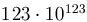

Pakiet umo¿liwia prezentowanie liczb w znormalizowanej postaci (równie¿ mianowanych).
Zawiera on polecenia:
\numprint{liczba} | liczba mo¿e zawieraæ cyfry, znaki +-,
litery Ee, kropkê oraz przecinek. Ca³a liczba jest prezentowana w
trybie matematycznym (ale miano sk³adane jest antykw±). Liczba w postaci 123E123 jest
prezentowana w postaci  |
\numprint[miano]{liczba} | |
\thousandsep{separator} | definiuje separator tysiêcy (standardowo \,) |
\decimalsignm{znak} | separator czê¶ci ca³kowitej i u³amkowej (standardowo ,) -- bêdzie on u¿yty bez wzglêdu jaki znak (kropka lub przecinek) by³ u¿yty w tek¶cie ¼ród³owym |
\productsign{znak} | separator wyk³adnika (standardowo \cdot) |
\unitseparator{separator} | definiuje separator liczby i miana (standardowo \,) |
\expnumprint{liczba1}{liczba2} | prezentuje liczbê zapisan¹ w postaci \expnumprint{123}{123} jako |
Zobacz tak¿e pakiet comma.
Pakiet jest dostêpny pod adresem:
ftp://ftp.gust.org.pl/TeX/macros/latex/contrib/numprint
 W³odzimierz Macewicz
W³odzimierz Macewicz